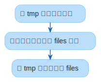

文件存储¶
使用单个文件夹存储所有相关文件，用 环境变量 进行配置。
目录结构¶
db/
Badger 键值数据库。
files/
转码生成的文件。
文件路径基于 sha256 内容摘要生成，格式为：
<摘要 1-2位>/<摘要 3-4位>/<摘要 5-64位>/<文件名>系统自动删除过期文件。
temp/
临时文件。
系统自动删除过期文件。
路径处理¶
支持为同一个路径返回 windows 或者 unix 对应的路径，通过设置路径映射规则实现。
默认为映射 /c 至 C:，/d 至 D:，以此类推26个小写字母。
路径规则通过环境变量 UNIPATH_RULE 设置，
格式为逗号分隔的映射路径值，Windows 路径不区分大小写。例 /mnt/c,C:,/mnt/d,D:。
因为 Windows 路径不区分大小写但是数据库区分，系统会将 Windows 路径统一转为小写再储存。